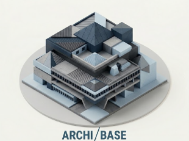
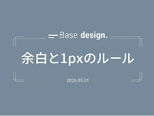
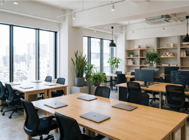
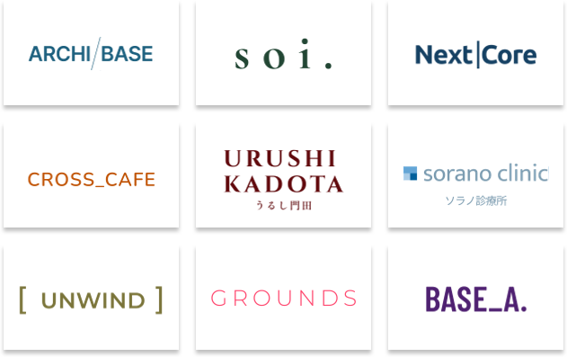

新着情報

建築設計事務所「ARCHI-BASE」様のコーポレートサイトを担当いたしました。
【洗練の裏側】私たちがWeb制作で大切にしている「余白と1pxのルール」について
オフィスの移転にともない、公式Webサイトを全面リニューアルいたしました。
CLIENT
パートナー企業のビジョンを深く理解し、本質的な課題解決を導くデジタルクリエイティブを提供。デザイン、テクノロジー、マーケティングの全領域からアプローチし、持続的な成長と洗練されたブランド体験をカタチにします。

私たちについて
根底にある
３つの
考え方
「対話から生まれ、想いを形にする。」私たちは、まずはお客様のお話をじっくり伺うことから始めます。 ものづくりとは、目に見える表現の前に、揺るぎない土台を築くことだと考えるからです。 そうして共有した「意図」と「明確なゴール」を道標に、私たちは以下の3つの約束を掲げています。
01 /
INFORMATION STRUCTURE
-飾る前に、まず骨組みを整える。
見た目の派手さだけで、中身のないWebサイトは作りません。
私たちはクライアントのビジネスの本質や強みを徹底的に紐解き、
ユーザーが迷わない「美しい情報整理」を行うことを、すべての
デザインの出発点にしています。
02 /
PIXEL PERFECT & DETAIL
−美しさは、細部のルールに宿る。
1pxの線の引き方、フォントのサイズ比率、心地よい余白のバランス。私たちはすべての要素に明確な理由とルールを持って設計します。
この細部（コンポーネント）へのこだわりが、サイト全体の圧倒的な信頼感へと繋がります。
03 /
SUSTAINABLE DESIGN
−トレンドを追わない。だから、古くならない。
Webのトレンドは移り変わりが激しいものです。しかし、企業の「土台（ベース）」となるアイデンティティは簡単に変わりません。
私たちは時代に流されることのないミニマルな設計で、5年後、10年後も長く愛され機能し続けるサイトを作ります。